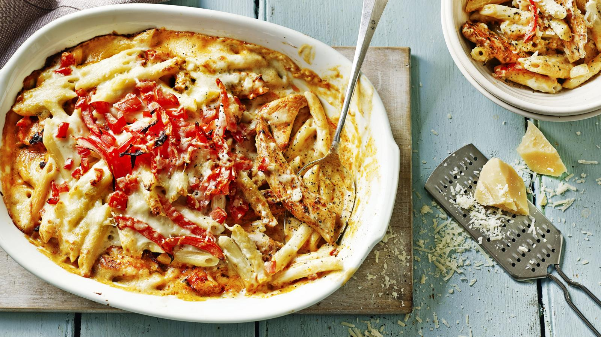

Chicken Pasta Bake
Description
Enjoy this gooey cheese and chicken pasta bake for the ultimate weekday family dinner. Serve straight from the dish with a dressed green salad
Ingredients
- 4 tbsp olive oil
- 1 onion, finely chopped
- 2 garlic cloves, crushed
- 1/4 tsp chilli flakes
- 2 x 400g cans chopped tomatoes
- 1 tsp caster sugar
- 6 tbsp mascarpone
- 4 skinless chicken breasts, sliced into strips
- 300g penne
- 70g mature cheddar, grated
- 50g grated mozzarella
- 1/2 small bunch of parsley, finely chopped
Steps
- STEP 1 - Heat 2 tbsp of the oil in a pan over a medium heat and fry the onion gently for 10-12 mins. Add the garlic and chilli flakes and cook for 1 min. Tip in the tomatoes and sugar and season to taste. Simmer uncovered for 20 mins or until thickened, then stir through the mascarpone.
- STEP 2 - Heat 1 tbsp of oil in a non-stick frying pan. Season the chicken and fry for 5-7 mins or until the chicken is cooked through.
- STEP 3 - Heat the oven to 220C/200C fan/gas 7. Cook the penne following pack instructions. Drain and toss with the remaining oil. Tip the pasta into a medium sized ovenproof dish. Stir in the chicken and pour over the sauce. Top with the cheddar, mozzarella and parsley. Bake for 20 mins or until golden brown and bubbling.